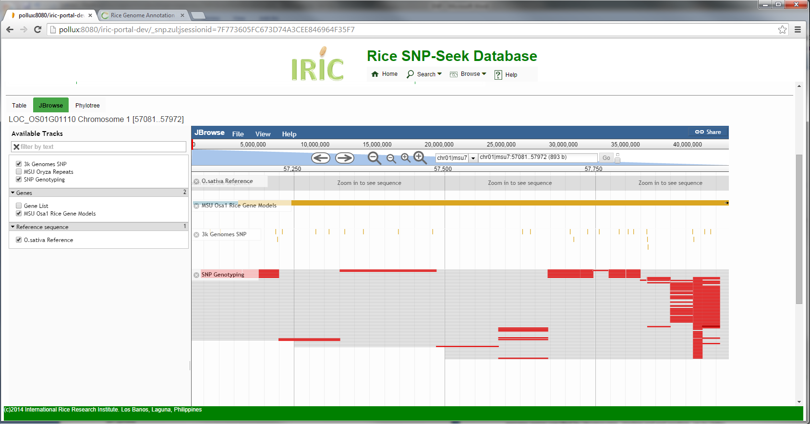

The Rice Genome Browser is embeded JBrowse with these rice-specific tracks:
- O. sativa Reference sequence - Nipponbare sequence release 7 from IRGSP. http://rice.plantbiology.msu.edu/annotation_pseudo_current.shtml
- Gene models - gene models from the Rice Genome Annotation Project http://rice.plantbiology.msu.edu/
- Oryza repeats from MSU Oryza Repeat Database http://rice.plantbiology.msu.edu/annotation_oryza.shtml
These tracks are from this project
- 3k Genome SNP - SNP universe by SNP calling the 3000 genomes to the Nipponbare reference sequence
- SNP Genotyping - a dynamic track created during SNP queries, displays each varieties having allele mismatch with the reference as a thin line along the genome, where each SNP position are colored either by allele or allele polymorphism
Created with the Personal Edition of HelpNDoc: Free EPub producer